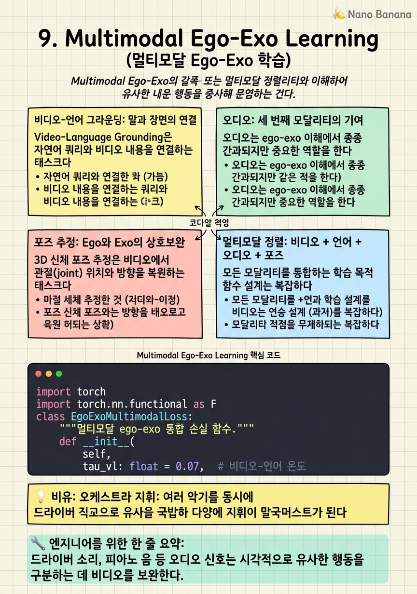

Multimodal Ego-Exo Learning

🎯 학습 목표
- 비디오-언어 그라운딩을 ego-exo 맥락에서 정의하고 주요 방법을 설명할 수 있다
- 오디오가 ego-exo 이해에 어떻게 기여하는지 구체적 예시로 설명할 수 있다
- 3D 손/신체 포즈 추정에서 ego와 exo 정보가 어떻게 상호보완적으로 작동하는지 이해한다
- 멀티모달 정렬을 위한 목적 함수 설계를 논할 수 있다
현실 세계에서 인간의 활동은 비디오만으로 이루어지지 않는다. 말소리, 도구 소리, 음악, 주변 소음 — 오디오가 활동의 의미를 보완한다. 내레이션, 지시문, 텍스트 레이블 — 언어가 의미를 명시화한다. 관절의 위치와 방향 — 포즈가 동작을 수량화한다.
Ego-exo 연구에서 이 추가 모달리티들은 두 시점 융합 문제를 더 풍부하게, 그리고 더 복잡하게 만든다. 언어 그라운딩은 자연어 쿼리로 비디오 내 특정 순간이나 객체를 찾게 한다. 오디오는 어떤 도구를 사용했는지, 어떤 활동이 진행 중인지를 비디오와 독립적으로 신호한다. 포즈는 ego의 제한된 시야를 보완해 착용자의 전신 움직임을 이해하게 한다.
이 모달리티들의 정렬과 통합이 진정한 의미의 활동 이해를 가능하게 한다 — 단순한 행동 분류를 넘어 '누가, 어디서, 무엇으로, 어떻게, 왜'를 이해하는 것.
핵심 내용
비디오-언어 그라운딩: 말과 장면의 연결
Video-Language Grounding은 자연어 쿼리와 비디오 내용을 연결하는 태스크다. Ego-exo 맥락에서는 두 가지 형태:
Temporal Grounding: '피아노 연주자가 실수를 하는 순간' → 비디오 시간 구간 [t_s, t_e]
Spatial Grounding: '요리사가 사용한 냄비' → 비디오 프레임 내 bounding box
Ego-exo 병렬 비디오에서 그라운딩의 흥미로운 확장:
- 크로스뷰 그라운딩: ego 비디오의 쿼리로 exo 비디오의 공간/시간 위치 찾기
- 뷰-불가지 그라운딩: 쿼리가 어느 시점을 지칭하는지 모르지만 두 시점 중 하나에서 찾기
Ego-Exo4D의 내레이션 어노테이션이 이 연구를 지원한다. 참여자들이 활동 중에 무엇을 하는지 말로 설명한 오디오 트랜스크립트가 타임스탬프와 함께 제공된다. 이를 통해 '방금 바퀴를 분리했습니다'라는 내레이션이 ego 비디오의 정확한 구간에 대응되는 자연 언어-비디오 정렬 데이터를 구축할 수 있다.
오디오: 세 번째 모달리티의 기여
오디오는 ego-exo 이해에서 종종 간과되지만 중요한 역할을 한다. 몇 가지 구체적 사례:
도구 인식: 드라이버가 나사를 조이는 소리, 피아노 건반 소리, 요리 시 볶는 소리 — 이 오디오 신호들은 어떤 도구가 사용됐는지, 현재 활동 단계가 무엇인지 비디오와 독립적으로 신호한다.
시간적 정렬 보조: 두 비디오 스트림(ego, exo)이 오디오를 공유하면 (Ego-Exo4D에서 동기화된 오디오), 오디오가 시간적 정렬의 앵커 역할을 한다. '쾅'하는 도구 충돌음이 정확히 어느 프레임에 있는지로 ego와 exo를 동기화할 수 있다.
모달리티 보완: 시각적으로 가려진 물체의 조작을 오디오로 추론할 수 있다. Ego에서 손이 구석을 건드릴 때 소리가 나면, 그 소리가 exo에서 보이지 않는 무언가와의 상호작용을 시사한다.
오디오-비주얼 ego-exo 모델 (arXiv:2602.06139)에서는 오디오를 추가 모달리티로 통합해 ego-exo 행동 인식 정확도를 향상시켰다. 특히 시각적으로 유사한 행동(예: 다른 종류의 피아노 연주 기법)을 오디오 신호로 구분하는 데 유효했다.
포즈 추정: Ego와 Exo의 상호보완
3D 신체 포즈 추정은 비디오에서 관절(joint) 위치와 방향을 복원하는 태스크다. Ego-exo에서 두 시점은 포즈 추정에서 서로 다른 강점을 가진다.
Exo에서의 포즈 추정: - 전신이 보이므로 전체 골격 추정 용이 - 깊이 애매성(depth ambiguity)이 있음 — 2D 투영만으로 3D 포즈 추정 시 불명확
Ego에서의 포즈 추정: - 전신이 보이지 않음 — 상체/하체를 동시에 보기 어려움 - 손과 머리 방향 추정에 유리 (HMD 센서, IMU 활용 가능)
두 시점을 합친 Ego-Exo Joint Pose Estimation:
- Exo에서 전신 포즈 추정 (OpenPose, HRNet 등 사용)
- Ego IMU 데이터로 머리 자세 추정
- 두 정보를 통합해 더 정확한 전신 3D 포즈 복원
수식: \[\hat{P}_{3D} = \arg\min_{P} \left[ \lambda_e \mathcal{L}_{\text{ego}}(P) + \lambda_x \mathcal{L}_{\text{exo}}(P) + \mathcal{L}_{\text{prior}}(P) \right]\]
\(\mathcal{L}_{\text{ego}}\), \(\mathcal{L}_{\text{exo}}\)는 각 시점에서의 포즈 관찰 일관성 손실, \(\mathcal{L}_{\text{prior}}\)는 신체 구조 사전(joint angle limits, bone length ratios 등).
멀티모달 정렬: 비디오 + 언어 + 오디오 + 포즈
모든 모달리티를 통합하는 학습 목적 함수 설계는 복잡하다. 기본 접근은 멀티모달 대조 학습:
\[\mathcal{L}_{\text{total}} = \mathcal{L}_{\text{VL}} + \mathcal{L}_{\text{VA}} + \mathcal{L}_{\text{ego-exo}} + \mathcal{L}_{\text{pose}}\]
- \(\mathcal{L}_{\text{VL}}\): 비디오-언어 대조 손실 (같은 활동의 비디오와 내레이션을 가까이)
- \(\mathcal{L}_{\text{VA}}\): 비디오-오디오 대조 손실 (동시에 발생한 비디오와 오디오를 가까이)
- \(\mathcal{L}_{\text{ego-exo}}\): Ego-exo 크로스뷰 대조 손실 (챕터 5)
- \(\mathcal{L}_{\text{pose}}\): 포즈 재구성 손실
이 모든 손실을 동시에 최적화하면 다시 negative transfer 문제가 발생할 수 있다. 각 손실 간의 상충 관계를 관리하는 그래디언트 조절이나 Pareto-optimal 훈련이 필요할 수 있다.
실용적 접근: 단계적 훈련(staged training)이 효과적이다 — 먼저 ego-exo 크로스뷰 정렬을 학습하고, 그 다음 언어 그라운딩을 추가하고, 마지막으로 오디오와 포즈를 통합한다. 한 번에 모든 모달리티를 학습하는 것보다 단계적 추가가 안정적으로 수렴한다.
💡 비유로 이해하기
멀티모달 ego-exo 학습은 오케스트라 지휘와 같다. 비디오(ego + exo)는 현악기, 언어는 관악기, 오디오는 타악기, 포즈는 피아노다. 각 파트가 혼자 연주할 때는 나름의 음악을 만든다. 하지만 좋은 연주는 이 모든 파트가 조화롭게 어우러질 때 나온다.
지휘자(학습 알고리즘)의 역할은 어느 파트가 언제 더 강조되어야 하는지, 어느 파트들이 함께 어우러져야 하는지를 결정하는 것이다. '여기서는 현악기(ego 비디오)가 주제를 가져가고, 저기서는 오보에(오디오)가 강조되어야 한다' — 이 동적 조율이 좋은 멀티모달 학습이다.
Negative transfer 문제는 '두 파트가 서로 다른 박자로 연주하는 것'이다. 강제로 하나의 박자에 맞추면 양쪽 모두 어색해진다. 해결책은 각 파트가 자신의 역할을 하면서도 전체 화음에 기여하는 구조적 조율이다.
💻 코드 예시
비디오, 오디오, 언어 세 모달리티의 대조 학습을 통합하는 멀티모달 ego-exo 목적 함수 구현이다.
import torch
import torch.nn.functional as F
class EgoExoMultimodalLoss:
"""멀티모달 ego-exo 통합 손실 함수."""
def __init__(
self,
tau_vl: float = 0.07, # 비디오-언어 온도
tau_va: float = 0.1, # 비디오-오디오 온도
tau_ee: float = 0.07, # ego-exo 온도
lambda_vl: float = 1.0,
lambda_va: float = 0.5,
lambda_ee: float = 1.0,
):
self.tau_vl = tau_vl
self.tau_va = tau_va
self.tau_ee = tau_ee
self.lam = {"vl": lambda_vl, "va": lambda_va, "ee": lambda_ee}
def infonce(self, z1, z2, tau):
"""대칭 InfoNCE 손실."""
z1 = F.normalize(z1, dim=-1)
z2 = F.normalize(z2, dim=-1)
B = z1.size(0)
logits = torch.mm(z1, z2.T) / tau
labels = torch.arange(B, device=z1.device)
return (F.cross_entropy(logits, labels) + F.cross_entropy(logits.T, labels)) / 2
def __call__(
self,
z_ego: torch.Tensor, # [B, D] ego 비디오 임베딩
z_exo: torch.Tensor, # [B, D] exo 비디오 임베딩
z_lang: torch.Tensor, # [B, D] 언어 임베딩
z_audio: torch.Tensor, # [B, D] 오디오 임베딩
) -> dict:
# 각 쌍의 대조 손실
loss_ee = self.infonce(z_ego, z_exo, self.tau_ee) # ego↔exo
loss_vl = (
self.infonce(z_ego, z_lang, self.tau_vl) +
self.infonce(z_exo, z_lang, self.tau_vl)
) / 2 # video↔language
loss_va = (
self.infonce(z_ego, z_audio, self.tau_va) +
self.infonce(z_exo, z_audio, self.tau_va)
) / 2 # video↔audio
total = (
self.lam["ee"] * loss_ee
+ self.lam["vl"] * loss_vl
+ self.lam["va"] * loss_va
)
return {"total": total, "ego_exo": loss_ee, "vl": loss_vl, "va": loss_va}
각 쌍마다 별도의 온도(tau)를 사용한다 — 모달리티 간 유사도 분포가 다르기 때문이다. lambda_va를 낮게 설정(0.5)한 것은 오디오가 비디오보다 약한 신호임을 반영한다. loss_vl에서 ego와 exo 양쪽 모두를 언어와 정렬하는 것이 크로스뷰 일관성 있는 언어 그라운딩을 위해 중요하다.
🏭 현업에서의 평가
✅ 시니어가 보는 것
- 각 모달리티의 ego-exo 이해 기여를 구체적 사례로 설명하는 능력
- 여러 손실을 합칠 때의 negative transfer 문제와 그 관리 전략(그래디언트 조절, 단계적 훈련)
- 오디오-비주얼 대응에서 positive pair 정의의 엄밀성 (시간적 동기화된 쌍 vs. 의미적으로 관련된 쌍)
- 포즈 추정에서 ego IMU와 exo 비주얼 정보의 Bayesian fusion 접근
⚠️ 레드 플래그
- 모든 모달리티를 단순히 concatenate하면 된다고 생각하는 경우
- 각 모달리티 손실의 가중치를 임의로 설정하고 그 선택 이유를 설명하지 못하는 경우
- 오디오를 ego-exo 연구에서 무관한 것으로 보는 경우
🎤 예상 인터뷰 질문
- Ego-Exo4D의 내레이션을 언어 그라운딩 데이터로 사용할 때 발생하는 노이즈 문제는 무엇이며 어떻게 처리해야 하는가?
- 오디오-비주얼 대조 학습에서 같은 비디오 클립에서 추출한 오디오와 비디오를 positive pair로 사용하는 것의 한계는?
- 멀티모달 모델의 각 모달리티 기여도를 ablation study로 측정하는 설계를 제안하라.
✨ 핵심 요약
오디오가 도구 인식에 강력
드라이버 소리, 피아노 음 등 오디오 신호는 시각적으로 유사한 행동을 구분하는 데 비디오를 보완한다.
언어 그라운딩의 크로스뷰 확장
한 시점의 언어 쿼리로 다른 시점에서 공간/시간 위치를 찾는 크로스뷰 그라운딩이 미개척 분야다.
포즈 추정의 시점 역할 분담
Exo는 전신 포즈, ego IMU는 머리 방향 — 두 시점의 보완으로 더 정확한 3D 포즈 복원이 가능하다.
멀티모달 negative transfer
여러 손실을 합칠 때도 negative transfer가 발생한다 — 단계적 훈련과 그래디언트 조절이 효과적이다.
내레이션 어노테이션이 자연 정렬 데이터
Ego-Exo4D의 타임스탬프 내레이션이 비디오-언어 정렬 연구를 위한 자연스러운 weak supervision을 제공한다.
멀티모달 설계 = 트레이드오프
각 모달리티의 기여와 비용, 손실 가중치의 의미 있는 선택이 멀티모달 모델 품질을 결정한다.